Eskişehir & Afyonkarahisar
Araç Kurtarma,Bobcat veDrone İlaçlama
Eskişehir ve Afyonkarahisar'da hızlı, güvenilir ve profesyonel destek.
İhtiyacınızı söyleyin, doğru ekipmanla sahaya gelelim.
AfyonHizmet Bölgesi
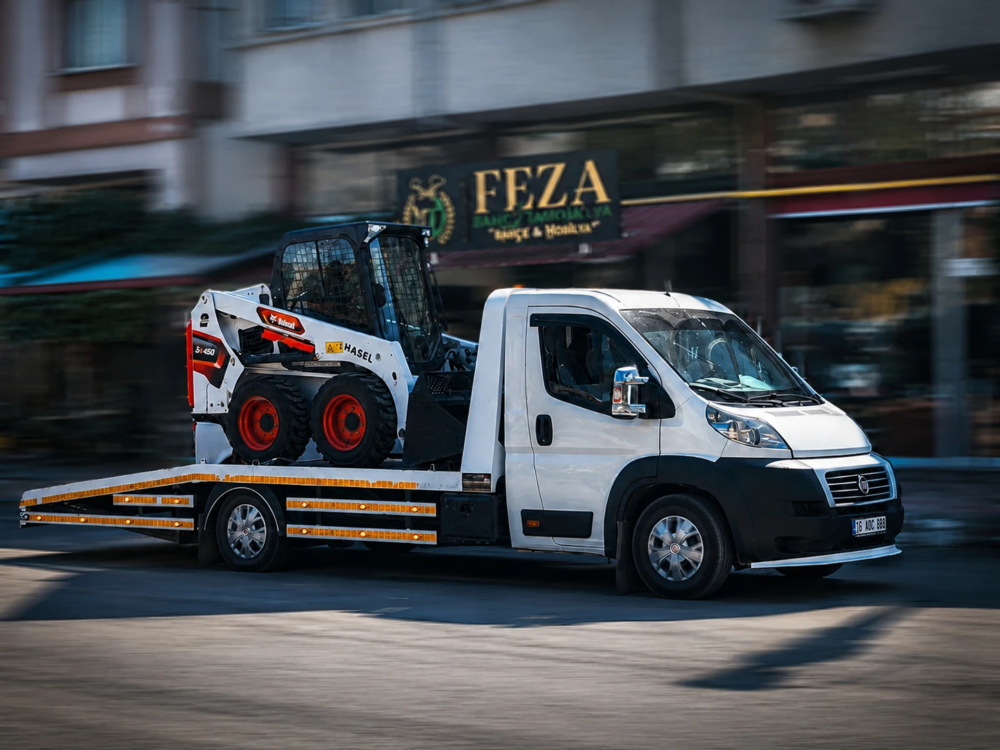
Araç Kurtarma
Yolda kalan, saplanan veya taşınması gereken araçlar için güvenli kurtarma ve oto çekici desteği.
Hizmeti incele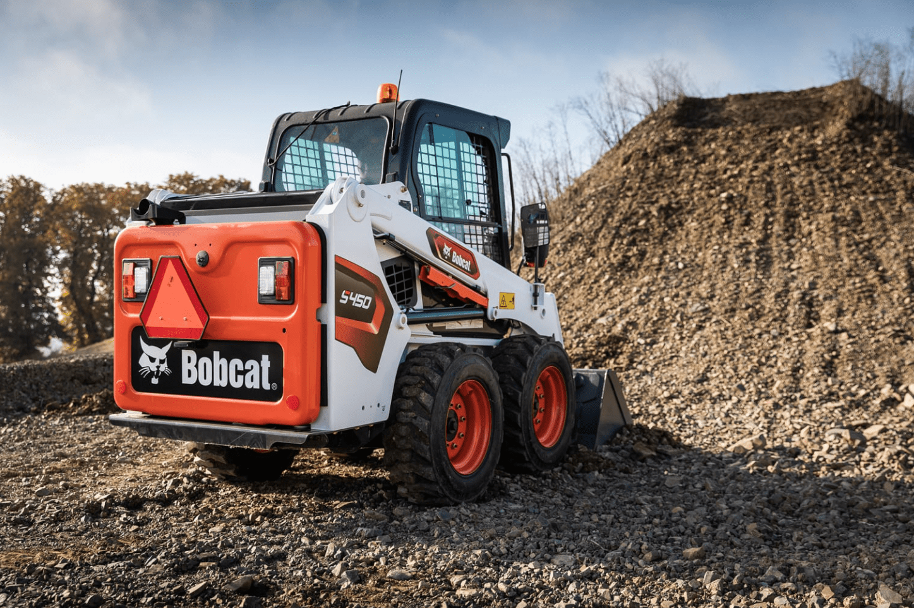
Bobcat Hizmeti
Kazı, dolgu, tesviye ve saha düzenleme işlerinde çevik ekipman, kontrollü çalışma.
Hizmeti incele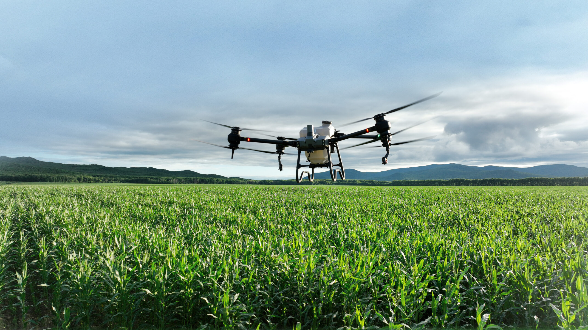
Drone İlaçlama
Tarla, bahçe ve eğimli arazilerde hızlı, homojen ve hedefli tarımsal uygulama.
Hizmeti inceleEskişehir ve Afyonkarahisar'da ihtiyacınıza uygun ekipmanla sahadayız.
Birlikte planlayalım ↗Sahadan görünüm
Modern ekipman, temiz iş akışı.

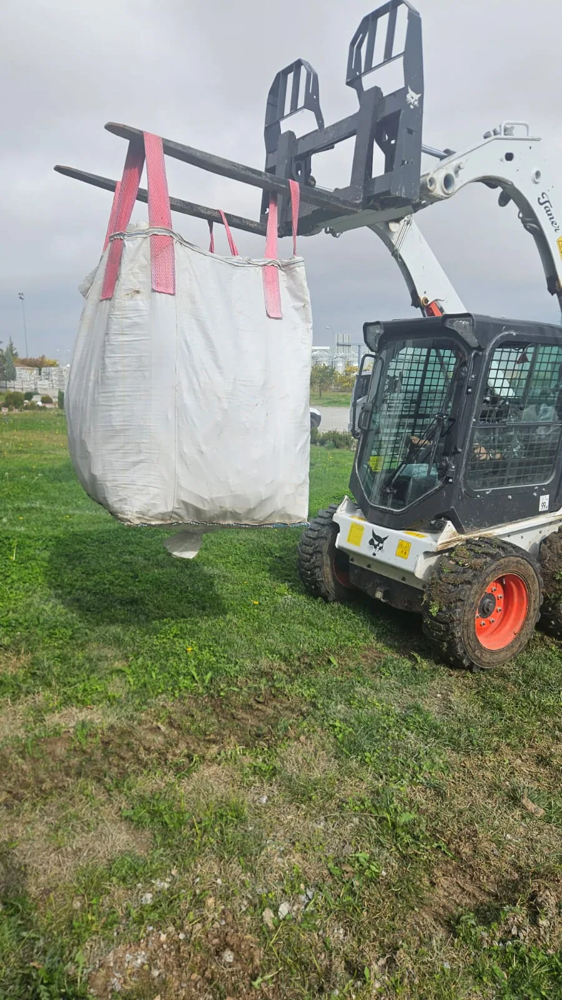
Bobcat hizmeti
Sahada yük taşıma.

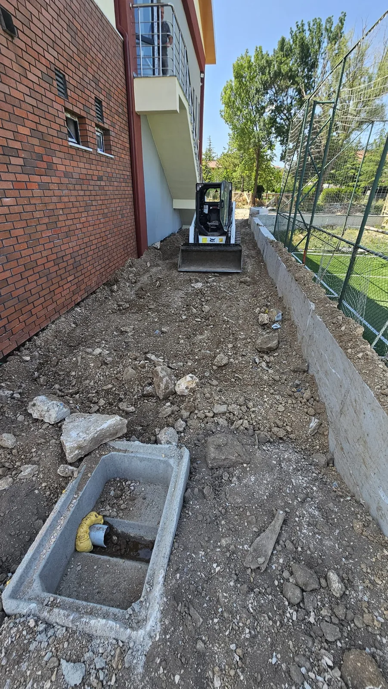
Bobcat hizmeti
Dar alanda saha hazırlığı.

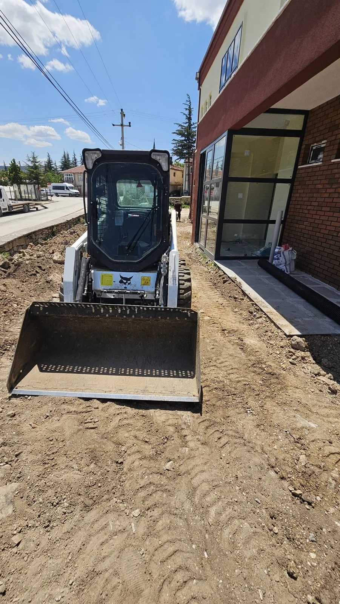
Bobcat hizmeti
Kontrollü zemin düzenleme.

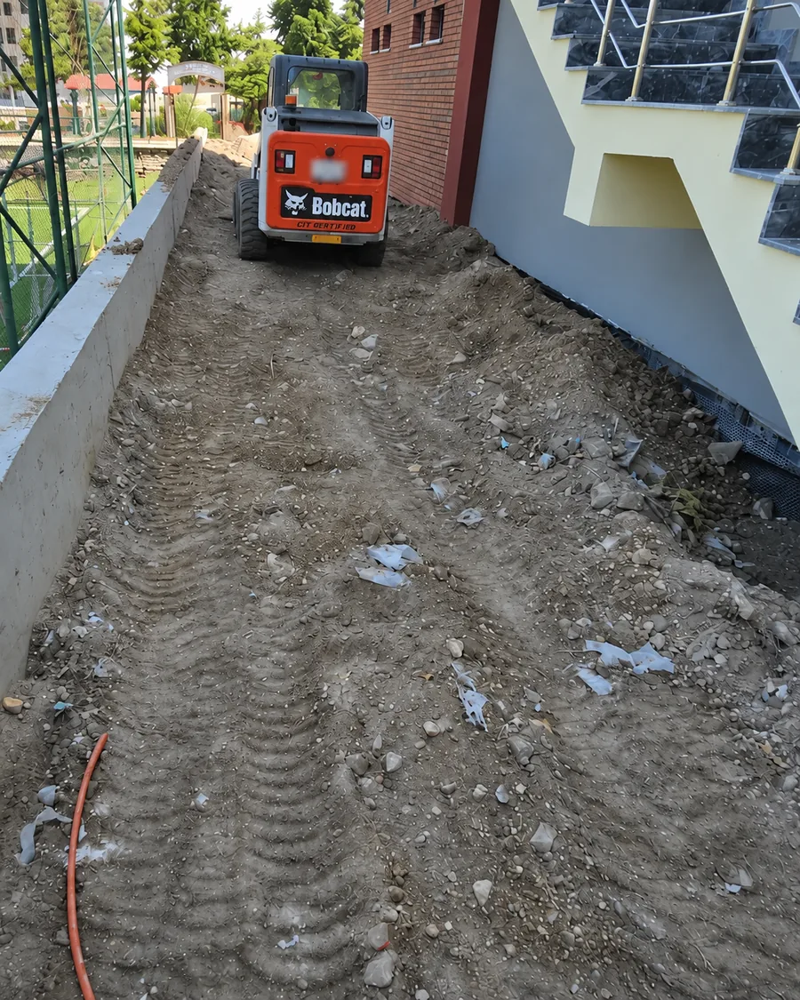
Bobcat hizmeti
Yapı çevresinde çalışma.

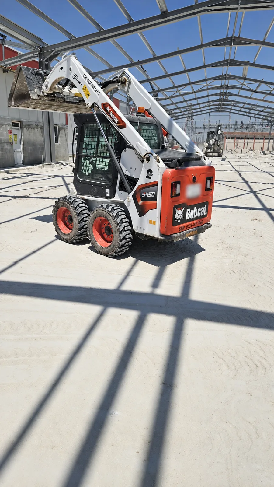
Bobcat hizmeti
Şantiyede güçlü destek.

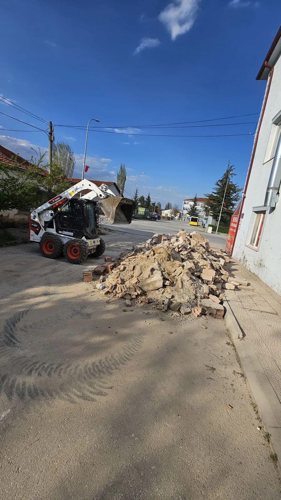
Bobcat hizmeti
Kazı ve saha düzenleme.

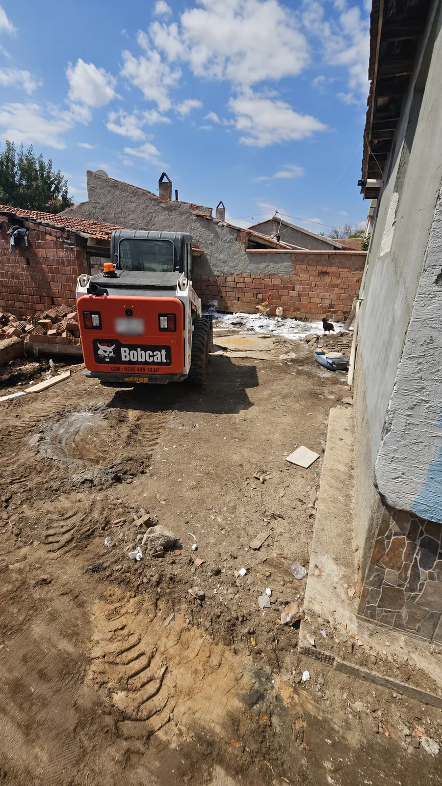
Bobcat hizmeti
Zemin tesviye çalışması.

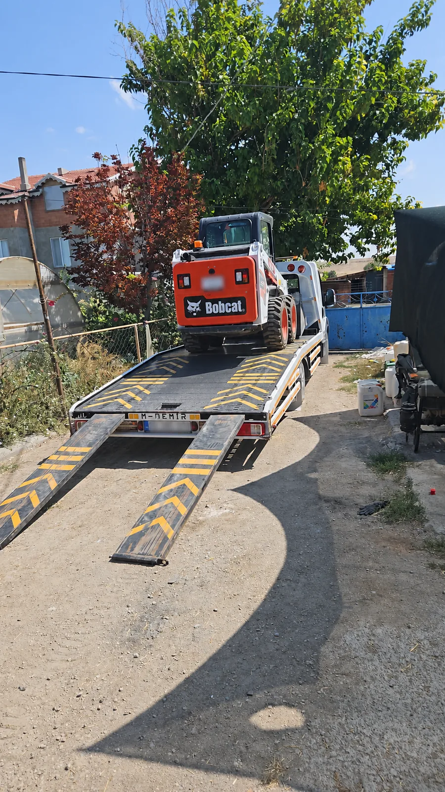
Bobcat hizmeti
Ekipman sahaya hazırlanıyor.

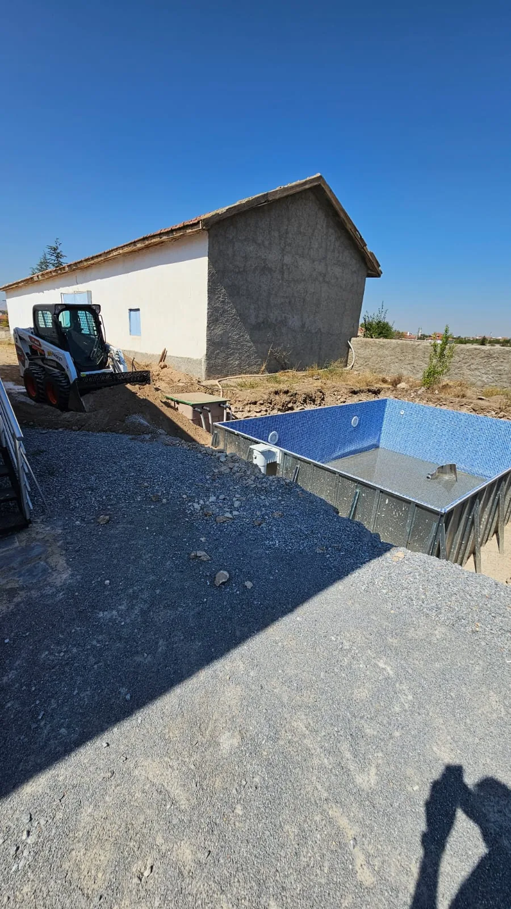
Bobcat hizmeti
Bahçe ve çevre düzenlemesi.

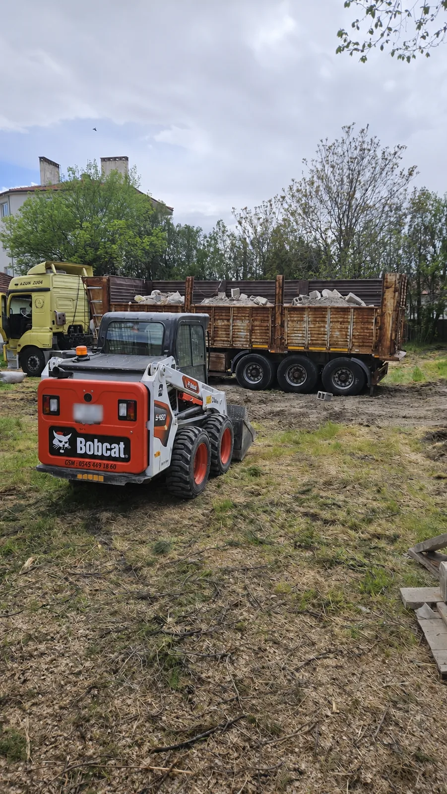
Bobcat hizmeti
Sahada yükleme desteği.

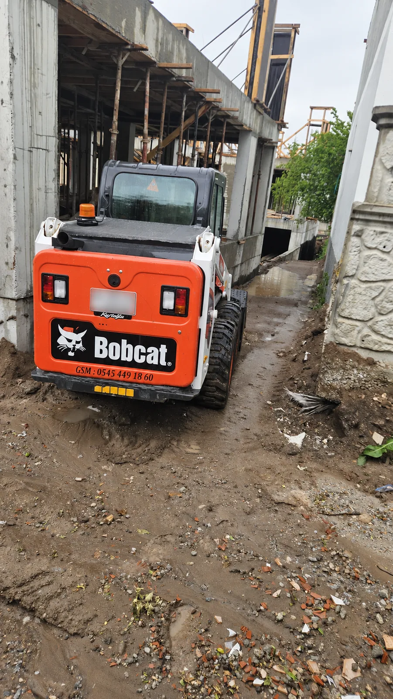
Bobcat hizmeti
Dar geçitlerde çevik çalışma.

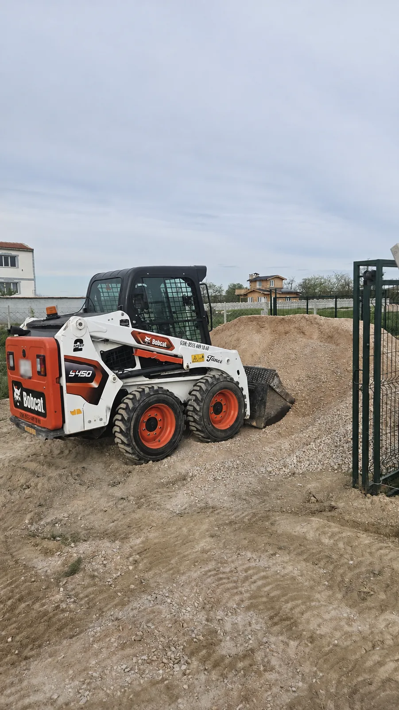
Bobcat hizmeti
Açık alanda zemin hazırlığı.

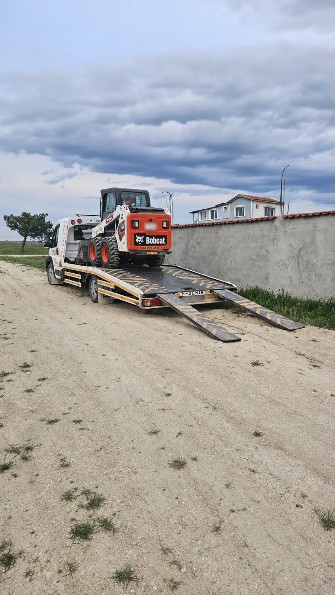
Bobcat hizmeti
Yeni görev için yola hazır.
Acele işlerde vakit kaybetmeyin
Eskişehir veya Afyonkarahisar içindeki konumunuzu ve ihtiyacınızı gönderin, size en uygun çözümü söyleyelim.
Sık sorulanlar
Merak
ettikleriniz.
Detayları konuşmak isterseniz arayın ya da WhatsApp’tan konum ve fotoğraf gönderin.
Telefonla görüşelim 0545 449 18 60Çekici çağırırken ne paylaşmalıyım?
Konumunuzu, araç modelini ve aracın durumunu paylaşmanız yeterli. Araç hareket etmiyorsa, tekerleği kilitliyse veya zemine saplandıysa bunu da belirtin.
Ne kadar sürede gelebilirsiniz?
Bulunduğunuz konuma ve ekibin o anki işine bağlı. Konumunuzu ilettiğinizde tahmini varış süresini telefonla netleştirebiliriz.
Ücreti nasıl öğrenebilirim?
İşin türü, mesafe ve gereken ekipman fiyatı etkiliyor. Konumla birlikte aracın ya da çalışma alanının fotoğrafını gönderin; işin kapsamını ve ücreti konuşalım.
Bobcat dar bir alana girebilir mi?
Geçiş genişliği, zemin ve yapılacak iş belirleyici. Alanın fotoğrafını ve giriş ölçüsünü gönderirseniz uygunluğu değerlendirebiliriz.
Drone ilaçlama için hangi bilgiler gerekiyor?
Ürün türünü, arazinin konumunu ve yaklaşık alanını paylaşın. Uygulamanın zamanı ve ayrıntıları arazi ile hava koşullarına göre planlanır.
Çifteler dışına da geliyor musunuz?
Evet. Eskişehir ve Afyonkarahisar çevresinden gelen talepler için konum ve ekip uygunluğuna göre planlama yapıyoruz.
Hizmet Bölgeleri
Eskişehir ve Afyonkarahisar bölgesinde hizmet veriyoruz.
Drone ilaçlama, araç kurtarma, araç çekme, oto çekici ve bobcat işleri için talepler Eskişehir, Afyonkarahisar ve çevre ilçelerden alınır. Çifteler, Emirdağ ve yakın ilçelerden gelen ihtiyaçlarda konum, işin aciliyeti ve ekipman uygunluğuna göre planlama yapılır.
İletişim
Eskişehir ve Afyonkarahisar için FEZA Kurtarma'ya hemen ulaşın.
FEZA Kurtarma'nın öncelikli hizmet bölgeleri Eskişehir ve Afyonkarahisar'dır. Buradaki alana bilgilerinizi ve ihtiyacınızı girdikten sonra "Talep Gönder" tuşuna basarak Whatsapp aracılığıyla hızlıca talebinizi bize iletebilirsiniz.